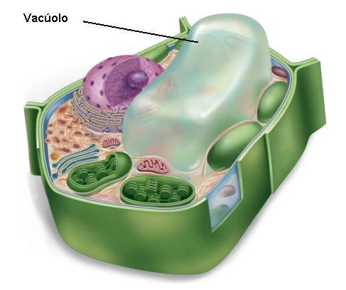

O que é o Vacuolo Central?
O vacuolo central é uma grande organela que armazena nutrientes, resíduos e ajuda a manter a pressão interna da célula, desempenhando um papel crucial na manutenção da forma e integridade celular.
Estrutura do Vacúolo Central
O vacúolo central possui as seguintes características estruturais:
- Membrana Tonoplasto: A membrana que envolve o vacúolo, separando-o do citoplasma. Regula a troca de substâncias entre o vacúolo e o restante da célula.
- Suco Vacuolar: Fluído dentro do vacúolo que contém água, íons, açúcares, aminoácidos e produtos de resíduos metabólicos. Esse fluído é responsável por várias funções, como a manutenção da pressão interna da célula.
- Corpos Inclusos: No vacúolo, podem ser encontrados corpos inclusos como cristais e pigmentos que desempenham papéis variados, incluindo a coloração de flores e frutos.
Funções do Vacúolo Central
O vacúolo central desempenha várias funções essenciais:
- Regulação da Pressão Osmótica: O vacúolo central ajuda a manter a pressão interna da célula, chamada de turgor, que é crucial para a rigidez e estrutura da planta.
- Armazenamento: Armazena nutrientes, íons e produtos de resíduos. O vacúolo pode também armazenar substâncias secundárias como alcaloides e flavonoides, que têm funções defensivas e de atração de polinizadores.
- Degradação: Contém enzimas que ajudam na degradação de macromoléculas e produtos de resíduos, desempenhando um papel similar ao de lisossomos nas células animais.
- Regulação do pH: Contribui para o equilíbrio do pH dentro da célula, essencial para a atividade enzimática e metabolismo celular.
Importância na Biotecnologia e Agricultura
O vacúolo central tem importância significativa na biotecnologia e agricultura:
- Melhoria de Cultivares: O estudo do vacúolo pode levar ao desenvolvimento de plantas com melhor capacidade de armazenamento de nutrientes e resistência a condições adversas.
- Produção de Metabólitos Secundários: A manipulação do vacúolo pode aumentar a produção de compostos bioativos, como antocianinas e saponinas, úteis na medicina e indústria alimentícia.
- Controle de Pragas: O entendimento das funções do vacúolo pode ajudar a desenvolver plantas que possuem maior resistência a pragas e doenças.
Comparação com Outras Estruturas Celulares
Enquanto o vacúolo central é predominante em células vegetais, outras células eucarióticas possuem organelas com funções similares:
- Lisossomos: Em células animais, os lisossomos realizam funções de degradação e reciclagem de materiais, desempenhando um papel semelhante ao das enzimas vacuolares.
- Vesículas de Armazenamento: Em células de fungos e algumas células animais, vesículas de armazenamento desempenham funções similares de armazenamento e regulação do pH.
Essas comparações destacam a evolução e adaptação das organelas ao longo do desenvolvimento celular e a diversidade de estratégias utilizadas para manter a homeostase e eficiência metabólica.